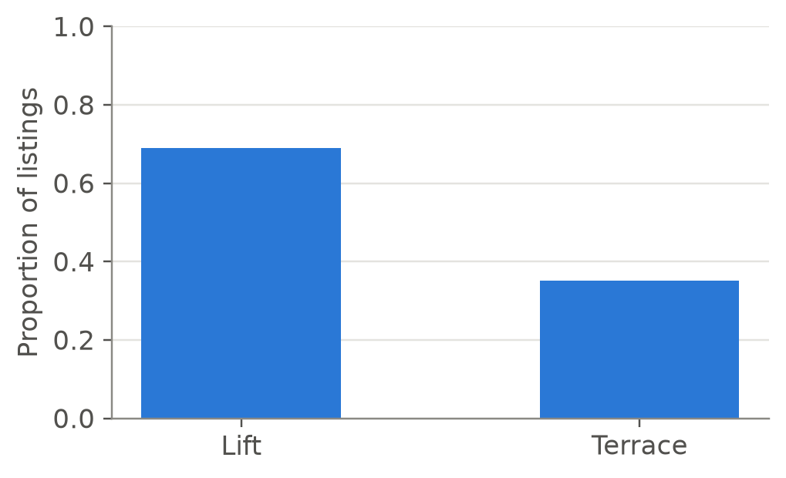
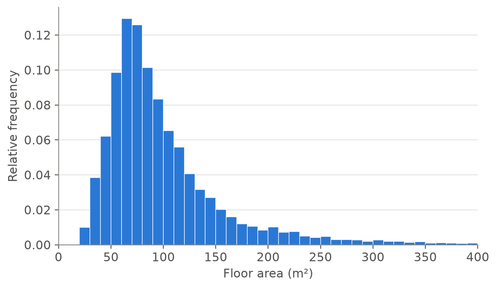
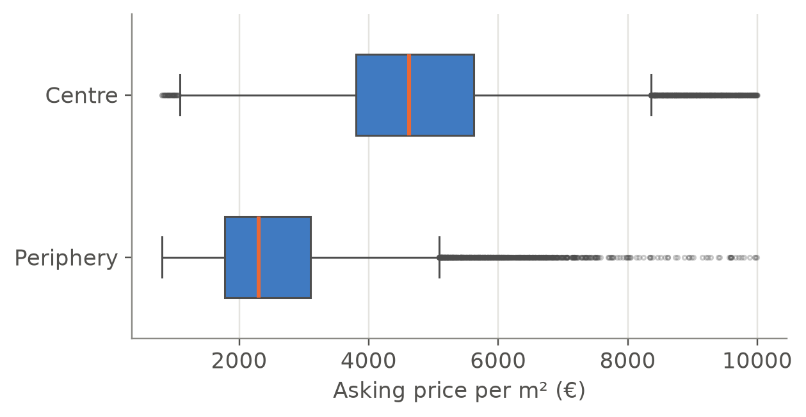

listings = pl.read_csv("data/processed/idealista/madrid_listings_2018.csv").select(
"listing_id", "district", "zone", "condition",
"price", "price_m2", "area_m2", "bedrooms", "bathrooms",
"floor", "lift", "terrace", "construction_year", "dist_centre_km",
)2.4 Exercises
Solutions are hidden: open them only after trying. Exercises 3, 6 and 10 are also meant to be done with pen and paper. The exercises with Python use the Madrid listings:
Exercise 1 (Lift and terrace)
- What type of variables are
liftandterrace? - Compute the proportion of listings with a lift and with a terrace, and draw both in a single bar chart.
- Is it correct to draw a pie chart of
lift?
TipSolution
Both are qualitative binary variables.
The mean of a binary variable is the proportion of
truevalues:
shares = listings.select(pl.col("lift", "terrace").mean())
shares| lift | terrace |
|---|---|
| 0.689 | 0.351 |
fig, ax = plt.subplots(figsize=(5, 3))
ax.bar(["Lift", "Terrace"], shares.row(0), width=0.5, color=COLORS["blue"])
ax.set_ylim(0, 1)
ax.set_ylabel("Proportion of listings")
plt.show()
About 69 % of the listings are in a building with a lift, and 35 % have a terrace.
- Yes. With two categories a pie chart is easy to read, although a single sentence (“69 % have a lift”) says the same. What would be wrong is a single pie with “lift” and “terrace” as slices: they are not categories of one variable, and a dwelling can have both.
Exercise 2 (Number of bathrooms)
- Build the frequency table of
bathrooms, with a last class “4 or more”, including cumulative frequencies. - What are the mode and the median of the number of bathrooms?
- What proportion of listings have at most two bathrooms?
TipSolution
bathrooms_table = (
listings
.with_columns(
bathrooms=pl.when(pl.col("bathrooms") >= 4).then(pl.lit("4+"))
.otherwise(pl.col("bathrooms").cast(pl.String))
)
.group_by("bathrooms")
.agg(n_i=pl.len())
.sort("bathrooms")
.with_columns(f_i=pl.col("n_i") / pl.col("n_i").sum())
.with_columns(F_i=pl.col("f_i").cum_sum())
)
bathrooms_table| bathrooms | n_i | f_i | F_i |
|---|---|---|---|
| 0 | 70 | 0.001 | 0.001 |
| 1 | 43,447 | 0.574 | 0.575 |
| 2 | 24,783 | 0.327 | 0.902 |
| 3 | 5027 | 0.066 | 0.968 |
| 4+ | 2408 | 0.032 | 1.000 |
The class “0” holds a few listings with no bathroom, probably errors or premises listed as dwellings.
- The mode is 1 bathroom, the most frequent value. The median is also 1: the cumulative frequency \(F_i\) first exceeds 0.5 in the row of 1.
listings.select(mode=pl.col("bathrooms").mode(), median=pl.col("bathrooms").median())| mode | median |
|---|---|
| 1 | 1.000 |
- It is the cumulative relative frequency of the row “2”: about 90 %.
Exercise 3 (Grouped data by hand) A property portal publishes only this table of the asking prices (thousands of €) of the 200 flats for sale in a town:
| Class | \([50, 100)\) | \([100, 150)\) | \([150, 200)\) | \([200, 300)\) | \([300, 500)\) |
|---|---|---|---|---|---|
| \(n_i\) | 20 | 50 | 45 | 65 | 20 |
- Complete the table with \(f_i\), \(F_i\), the class marks \(x_i\) and the densities \(h_i = f_i / a_i\). Which is the most frequent class? Which is the modal class?
- Compute the approximate mean, variance and standard deviation, using the computational formula for the variance.
- Compute the approximate median and third quartile with the ogive.
TipSolution
\(f_i = 0.10, 0.25, 0.225, 0.325, 0.10\); \(F_i = 0.10, 0.35, 0.575, 0.90, 1\); class marks 75, 125, 175, 250, 400; widths 50, 50, 50, 100, 200; densities (per thousand €) 0.0020, 0.0050, 0.0045, 0.00325, 0.0005. The most frequent class is \([200, 300)\), but it is twice as wide as the first three; the modal class, the one with the greatest density, is \([100, 150)\).
\(\bar x \approx \sum f_i x_i = 7.5 + 31.25 + 39.375 + 81.25 + 40 = 199.375\), and \(\sum f_i x_i^2 = 562.5 + 3906.25 + 6890.625 + 20312.5 + 16000 = 47671.875\). By the computational formula, \(s^2 \approx 47671.875 - 199.375^2 \approx 7921.5\) and \(s \approx 89.0\) thousand €.
The median is in the first class with \(F_i \ge 0.5\), \([150, 200)\): \(Me \approx 150 + \frac{0.5 - 0.35}{0.225}\cdot 50 \approx 183.3\). For \(Q_{0.75}\) the class is \([200, 300)\): \(Q_{0.75} \approx 200 + \frac{0.75 - 0.575}{0.325}\cdot 100 \approx 253.8\).
lower = np.array([50, 100, 150, 200, 300]); upper = np.array([100, 150, 200, 300, 500])
n_i = np.array([20, 50, 45, 65, 20])
f = n_i / n_i.sum(); F = np.cumsum(f); mark = (lower + upper) / 2; width = upper - lower
mean = np.sum(f * mark); var = np.sum(f * mark**2) - mean**2
def grouped_quantile(p):
i = np.argmax(F >= p)
F_prev = F[i - 1] if i > 0 else 0.0
return lower[i] + (p - F_prev) / f[i] * width[i]
print("densities:", np.round(f / width, 5))
print(f"mean {mean:.3f}, variance {var:.2f}, sd {np.sqrt(var):.2f}")
print(f"median {grouped_quantile(0.5):.2f}, Q3 {grouped_quantile(0.75):.2f}")densities: [0.002 0.005 0.0045 0.0032 0.0005]
mean 199.375, variance 7921.48, sd 89.00
median 183.33, Q3 253.85Exercise 4 (Computing by hand) These are the asking prices, in thousands of euros, of the eight flats for sale in a street:
\[ 180, \quad 210, \quad 195, \quad 240, \quad 1150, \quad 205, \quad 225, \quad 190 . \]
- Compute the mean and the median. Which one describes better the price of a flat in this street?
- Compute the variance \(s^2\), the standard deviation \(s\) and the corrected variance \(\hat s^2\).
- Compute the quartiles (with linear interpolation, as in NumPy) and the fences of the boxplot. Is there any outlier?
- Repeat a) and b) without the flat of 1,150. What do you conclude?
Check your results with Python.
TipSolution
Ordered: 180, 190, 195, 205, 210, 225, 240, 1150. The mean is \(\bar x = 2595 / 8 = 324.4\). With \(n = 8\) (even), the median is the average of the two central values, \((205 + 210)/2 = 207.5\). Seven of the eight flats cost between 180 and 240: the median describes them well, while the mean is above all of them except one.
The squared deviations from 324.375 add up to \(\sum(x_i - \bar x)^2 \approx 781{,}622\), so \(s^2 = 781{,}622 / 8 \approx 97{,}703\), \(s \approx 312.6\) and \(\hat s^2 = 781{,}622 / 7 \approx 111{,}660\). With \(n = 8\), dividing by \(n\) or by \(n - 1\) makes a visible difference.
With linear interpolation, the quartile \(Q_p\) is at position \(1 + p(n-1)\) of the ordered data. For \(Q_1\): position \(1 + 0.25 \cdot 7 = 2.75\), between 190 and 195, so \(Q_1 = 190 + 0.75 \cdot 5 = 193.75\). For \(Q_3\): position 6.25, so \(Q_3 = 225 + 0.25 \cdot 15 = 228.75\). Then \(IQR = 35\), \(LF = 141.25\) and \(UF = 281.25\): the flat of 1,150 is an outlier.
Without it, \(\bar x = 1445/7 \approx 206.4\) and the median is 205: both now agree. The standard deviation falls from about 313 to about 19. A single observation dominated the mean and, even more, the standard deviation.
x = np.array([180, 210, 195, 240, 1150, 205, 225, 190])
q1, q3 = np.quantile(x, [0.25, 0.75])
print(f"mean {x.mean():.1f}, median {np.median(x):.1f}")
print(f"s^2 {x.var():,.1f}, s {x.std():.1f}, corrected variance {x.var(ddof=1):,.1f}")
print(f"Q1 {q1}, Q3 {q3}, fences [{q1 - 1.5 * (q3 - q1)}, {q3 + 1.5 * (q3 - q1)}]")
y = x[x != 1150]
print(f"without 1150: mean {y.mean():.1f}, median {np.median(y):.1f}, s {y.std():.1f}")mean 324.4, median 207.5
s^2 97,702.7, s 312.6, corrected variance 111,660.3
Q1 193.75, Q3 228.75, fences [141.25, 281.25]
without 1150: mean 206.4, median 205.0, s 19.2Exercise 5 (Combining groups) The price per m² of the listings has these summaries by zone (standard deviations with divisor \(n_g\)):
| Zone | \(n_g\) | Mean (€/m²) | Standard deviation (€/m²) |
|---|---|---|---|
| Centre | 36,176 | 4,811 | 1,473 |
| Periphery | 39,559 | 2,562 | 1,096 |
- Compute the mean and the standard deviation of the price per m² of all the listings, without using the individual data.
- What proportion of the variance is explained by the zone? Compare it with the proportion explained by the district in part 3.
- Check a) with Python.
TipSolution
With \(n = 75{,}735\), the weights are \(0.4777\) and \(0.5223\). The mean is \(\bar x = 0.4777 \cdot 4811 + 0.5223 \cdot 2562 \approx 3636\) €/m². By the decomposition of the variance, the within part is \(0.4777 \cdot 1473^2 + 0.5223 \cdot 1096^2 \approx 1{,}664{,}000\) and the between part is \(0.4777(4811 - 3636)^2 + 0.5223(2562 - 3636)^2 \approx 1{,}262{,}000\), so \(s^2 \approx 2{,}926{,}000\) and \(s \approx 1711\) €/m².
\(\eta^2 \approx 1{,}262{,}000 / 2{,}926{,}000 \approx 0.43\). The district explains more (0.59), because its 21 groups contain the 2 zones: splitting groups can only increase the between part.
listings.select(mean=pl.col("price_m2").mean(), std_dev=pl.col("price_m2").std(ddof=0))| mean | std_dev |
|---|---|
| 3,636.3 | 1,710.4 |
Exercise 6 (Shape does not depend on the units) Let \(y_i = a + b\,x_i\) with \(b \neq 0\).
- Prove that the skewness coefficient satisfies \(g_1(y) = g_1(x)\) if \(b > 0\) and \(g_1(y) = -g_1(x)\) if \(b < 0\), and that the excess kurtosis does not change.
- Prove that the coefficient of variation does not change if \(a = 0\) and \(b > 0\), but can change if \(a \neq 0\).
- Check a) with the prices in euros and in thousands of euros, and with \(y = -x\).
TipSolution
By the result on linear transformations, \(y_i - \bar y = b(x_i - \bar x)\) and \(s_y = |b|\,s_x\). Hence \[ g_1(y) = \frac{\frac1n\sum b^3(x_i - \bar x)^3}{|b|^3 s_x^3} = \frac{b^3}{|b|^3}\,g_1(x), \] and \(b^3/|b|^3\) is the sign of \(b\). For the kurtosis the powers are even, \(b^4/|b|^4 = 1\).
\(CV_y = |b|\,s_x / (a + b\bar x)\), which equals \(s_x / \bar x\) when \(a = 0\) and \(b > 0\). With \(a \neq 0\) the denominator changes but the numerator does not.
price = listings["price"]
pl.DataFrame({
"variable": ["price (€)", "price (thousands of €)", "-price"],
"skewness": [price.skew(), (price / 1000).skew(), (-price).skew()],
"kurtosis": [price.kurtosis(), (price / 1000).kurtosis(), (-price).kurtosis()],
})| variable | skewness | kurtosis |
|---|---|---|
| price (€) | 4.074 | 29.472 |
| price (thousands of €) | 4.074 | 29.472 |
| -price | -4.074 | 29.472 |
Exercise 7 (Floor area)
- Draw a histogram of
area_m2(up to 400 m²) and describe its shape. - Compute the mean, the median and the quartiles of the floor area.
- A family looks for a flat of at least 150 m². What proportion of the listings meets this condition? Which percentile is 150 m², approximately?
TipSolution
fig, ax = plt.subplots()
sns.histplot(x=listings["area_m2"].to_numpy(), bins=np.arange(0, 405, 10),
stat="probability", color=COLORS["blue"], edgecolor="white",
linewidth=0.5, alpha=1, ax=ax)
ax.set_xlim(0, 400)
ax.set_xlabel("Floor area (m²)")
ax.set_ylabel("Relative frequency")
plt.show()
The distribution is right-skewed, like the price: two thirds of the dwellings have between 50 and 120 m², and a long tail reaches several hundred square metres.
listings.select(
mean=pl.col("area_m2").mean(),
Q1=pl.col("area_m2").quantile(0.25, "linear"),
median=pl.col("area_m2").median(),
Q3=pl.col("area_m2").quantile(0.75, "linear"),
)| mean | Q1 | median | Q3 |
|---|---|---|---|
| 100.221 | 62.000 | 82.000 | 115.000 |
As expected with right skewness, the mean (about 100 m²) is larger than the median (82 m²).
share = (listings["area_m2"] >= 150).mean()
print(f"Proportion with at least 150 m²: {share:.3f}")Proportion with at least 150 m²: 0.137About 14 % of the listings have 150 m² or more, so 150 m² is approximately the 86th percentile: it leaves about 86 % of the listings below it.
Exercise 8 (Centre and periphery)
- Compute, for each zone, the number of listings and the mean, median, standard deviation and coefficient of variation of the price per m².
- Draw boxplots of the price per m² in the two zones.
- In which zone are prices per m² higher? In which one are they more dispersed, in absolute terms and relative to the mean?
TipSolution
x = pl.col("price_m2")
(
listings.group_by("zone")
.agg(n=pl.len(), mean=x.mean(), median=x.median(),
std_dev=x.std(ddof=0), CV=x.std(ddof=0) / x.mean())
.sort("zone")
)| zone | n | mean | median | std_dev | CV |
|---|---|---|---|---|---|
| Centre | 36,176 | 4,811.1 | 4,623.6 | 1,472.8 | 0.306 |
| Periphery | 39,559 | 2,562.0 | 2,300.0 | 1,096.0 | 0.428 |
fig, ax = plt.subplots(figsize=(6, 3))
sns.boxplot(x=listings["price_m2"].to_numpy(), y=listings["zone"].to_numpy(),
order=["Centre", "Periphery"],
color=COLORS["blue"], width=0.5,
medianprops=dict(color=COLORS["orange"], linewidth=2),
flierprops=dict(marker="o", markersize=2, alpha=0.3), ax=ax)
ax.set_xlabel("Asking price per m² (€)")
ax.set_ylabel("")
ax.grid(axis="x"); ax.grid(axis="y", visible=False)
plt.show()
- The median price per m² in the centre (about 4,600 €) is about twice that of the periphery (2,300 €). The centre also has a larger standard deviation, but relative to its mean its spread is smaller: its coefficient of variation is lower. The periphery is more heterogeneous, because it mixes neighbourhoods as different as those of Moncloa-Aravaca and Villaverde.
Exercise 9 (Change of units) A British investor wants the floor area in square feet (1 m² = 10.764 ft²) and the price in thousands of euros.
- Without using the data, how do the mean, the standard deviation and the coefficient of variation of the area change when it is expressed in ft²?
- Check it with Python, for the area and for the price.
- The investor also wants a variable “area above 90 m²”, \(y_i = x_i - 90\). How do its mean, standard deviation and coefficient of variation compare with those of the area?
TipSolution
By the result on linear transformations of part 3, with \(y = 10.764\,x\) the mean and the standard deviation are multiplied by 10.764, and the coefficient of variation, their ratio, does not change. It has no units.
def summary(s: pl.Series) -> dict:
return {"mean": s.mean(), "std_dev": s.std(ddof=0), "CV": s.std(ddof=0) / s.mean()}
pl.DataFrame([
{"variable": "area (m²)", **summary(listings["area_m2"])},
{"variable": "area (ft²)", **summary(listings["area_m2"] * 10.764)},
{"variable": "price (€)", **summary(listings["price"])},
{"variable": "price (thousands of €)", **summary(listings["price"] / 1000)},
])| variable | mean | std_dev | CV |
|---|---|---|---|
| area (m²) | 100.221 | 66.412 | 0.663 |
| area (ft²) | 1,078.8 | 714.858 | 0.663 |
| price (€) | 388,892.1 | 412,406.6 | 1.060 |
| price (thousands of €) | 388.892 | 412.407 | 1.060 |
- With \(a = -90\) and \(b = 1\), the mean decreases by 90 m² and the standard deviation does not change. The coefficient of variation does change, because the mean changes but the standard deviation does not: the CV only makes sense on a ratio scale, with a true zero, and “area above 90 m²” has lost it (it can even be negative).
Exercise 10 (Chebyshev’s bound cannot be improved) Consider the eight observations \(-1, 0, 0, 0, 0, 0, 0, 1\).
- Compute \(\bar x\) and \(s\).
- What proportion of the observations satisfies \(|x_i - \bar x| \ge 2s\)? Compare it with the bound of Chebyshev’s inequality for \(k = 2\).
- Why does this show that, without further information on the data, the bound \(1/k^2\) cannot be lowered?
TipSolution
\(\bar x = 0\) and \(s^2 = \frac18(1 + 1) = \frac14\), so \(s = \frac12\).
\(2s = 1\), and the observations with \(|x_i| \ge 1\) are \(-1\) and \(1\): a proportion of \(2/8 = 1/4\), exactly the bound \(1/k^2 = 1/4\).
The inequality claims that the proportion is at most \(1/k^2\) for every data set. Since here the proportion equals \(1/4\), no smaller number can be a valid bound for all data sets. The bound is attained when the observations far from the mean are all exactly at distance \(ks\) and the rest are exactly at the mean, which is what the proof shows: equality requires both inequalities in it to be equalities.